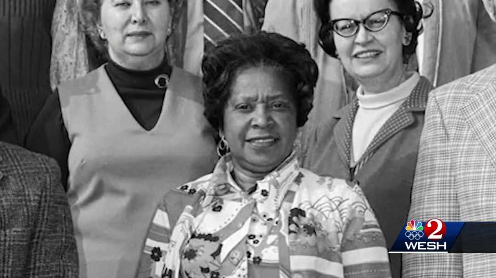

"Measure your success not in achievements, but in the number of lives you touch."
Mary Jackson was a trailblazing engineer and mathematician who made significant contributions to
NASA's early
space programs, breaking barriers as the agency's first black female engineer. Her remarkable journey not only
paved the way for diversity and inclusion in the aerospace industry but also inspired generations of women and
minorities to pursue careers in STEM (science, technology, engineering, and mathematics).
Born on April 9, 1921, in Hampton, Virginia, Mary Jackson grew up during a time of segregation and
racial
discrimination in the United States. Despite facing numerous challenges, she displayed a keen interest in
mathematics and science from an early age. Jackson graduated with honors from Hampton Institute (now known as
Hampton University) with a dual degree in mathematics and physical science.
In 1951, Mary Jackson began her career at the National Advisory Committee for Aeronautics (NACA),
which later
became NASA. She initially worked as a "human computer," performing complex calculations by hand for engineers
and researchers. Her intelligence, determination, and passion for aerospace engineering caught the attention of
her colleagues and supervisors.
Jackson's career took a significant turn when she joined NASA's Space Task Group, where she worked
alongside
other brilliant minds like Katherine Johnson and Dorothy Vaughan. Despite facing racial and gender
discrimination, Mary Jackson persevered and became an advocate for equal opportunities for women and minorities
in the field of engineering.
In 1958, Mary Jackson became NASA's first black female engineer after completing additional training
and
coursework in engineering. Her expertise in aerodynamics and engineering principles was instrumental in shaping
NASA's early space missions, including the Mercury and Apollo programs.

One of Jackson's notable achievements was her work on the Supersonic Pressure Tunnel, where she
conducted groundbreaking research on airflow around aircraft at high speeds. Her contributions were crucial in
developing safer and more efficient aerospace technologies.
Mary Jackson's legacy extends beyond her technical achievements. She actively promoted education and
mentorship, encouraging young people, especially minorities and girls, to pursue careers in STEM fields. Her
determination to overcome barriers and excel in a male-dominated industry serves as an inspiration to
individuals facing similar challenges today.
In 2019, Mary Jackson was posthumously awarded the Congressional Gold Medal, one of the highest
civilian honors in the United States, for her groundbreaking contributions to space exploration and her advocacy
for diversity and inclusion in STEM.
Mary Jackson's story reminds us of the importance of diversity, equity, and inclusion in scientific
and technological advancements. Her legacy continues to inspire future generations to reach for the stars and
break barriers in pursuit of knowledge and innovation.
(Generated using gpt)
(Photograph courtesy Google)